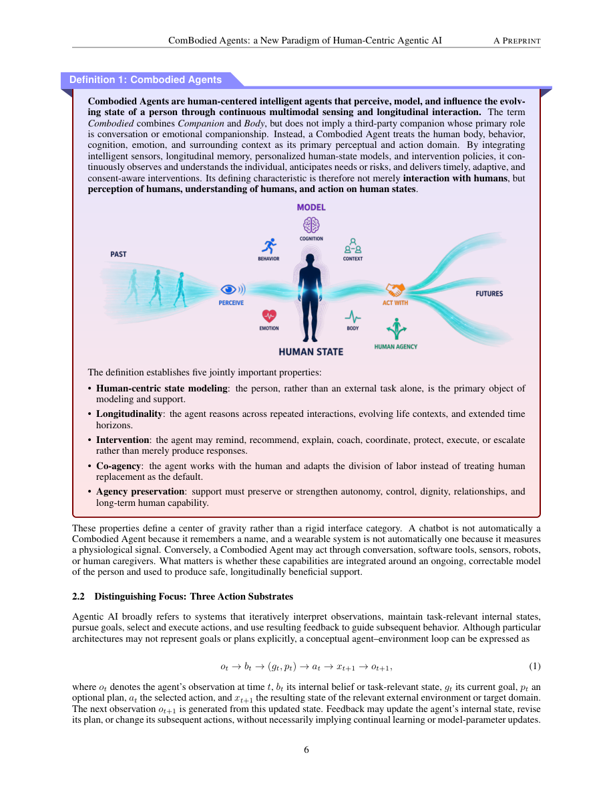

#1
★ 8/10
ComBodied Agents: a New Paradigm of Human-Centric Agentic AI
ComBodied智能体：以人为中心的新型智能体AI范式

图 Figure · Page 6 of paper
🎯 提出"ComBodied智能体"范式，让AI真正关注人的状态而非仅完成外部任务
A new AI paradigm that puts the evolving human state at the center of every decision and action.
🗣️ 一句话比喻 · Plain-English Analogy就像一个真正好的家庭医生，不只是在你挂号时开药，而是记得你上次的状态、预测你下次可能的风险、在你还没开口时就知道你需要什么——ComBodied智能体就是要把这种"懂你的医生"变成AI的设计标准，而不是让AI永远只是一个"只会发提醒的闹钟"。Think of it like the difference between a vending machine and a really great family doctor. A vending machine (today's AI) dispenses what you press — it sends a reminder, it brings the pill. But a great doctor remembers your history, notices you seem off today, predicts what might happen next week, and asks "are you okay?" before reaching for the prescription pad. ComBodied Agents want to make AI more like that great doctor.
| 维度 | 中文 | English |
|---|---|---|
| ❓ 待解决 的问题 |
现有AI智能体分两类：一类是软件智能体（比如发提醒短信的App），一类是实体机器人（能帮你拿药的机器人）。但两类都有一个致命盲点：它们只关注"完成任务"，却从不真正理解"人"本身——比如你为什么没吃药？是忘了、搞混了、有副作用，还是主动拒绝？现有AI无法区分这些情况，更无法提供真正合适的帮助。 | Today's AI agents — whether apps sending reminders or robots fetching things — only focus on completing a task. They don't actually understand the person behind the task. If an elderly patient skips a medication, the AI just sends another reminder or physically brings the pill, but never asks: did they forget? Are they confused? Having side effects? Deliberately refusing? Without understanding the human, the AI can't provide truly appropriate support. |
| 💡 解决 的亮点 |
• 首次提出"ComBodied智能体"概念：将软件工具、传感器、可穿戴设备、机器人和人类服务都视为"行动渠道"，而非终极目标，真正以人的状态为核心建模。 • 设计了"个人世界模型"（Personal World Models）：AI能预测在不同干预方案下，某个具体的人未来状态会如何变化，类似给每个人配一个专属模拟器。 • 提出"可允许干预策略"：AI在行动前必须考虑用户同意、不确定性、安全性、可逆性和用户控制权，避免过度或不当干预。 • 构建闭环感知-记忆-预测-干预系统：通过事件驱动的多模态感知、可纠正的长期记忆和用户反馈，形成持续迭代的个性化支持循环。 | • First to define "ComBodied Agents" — a paradigm treating all tools (apps, sensors, robots, human services) as action channels in service of the person's wellbeing, not as goals in themselves. • Introduces "Personal World Models" — AI simulations that predict how a specific individual's state will evolve under different interventions, like a personalized "what-if" engine. • Proposes an "admissible intervention policy" — before acting, the AI must pass ethical checkpoints: consent, safety, reversibility, and user control. • Designs a closed feedback loop: perception → memory → prediction → intervention → feedback, continuously updated by the person and their environment. |
| 🧪 实验 内容 |
这是一篇概念性框架论文（位置论文），主要贡献是提出范式和理论框架，而非报告具体实验数字。论文通过一系列场景案例（如老年用药、健康监测、AI陪伴）来论证框架的合理性，并对现有个人助手、健康智能体、AI伴侣等系统进行系统性对比分析，指出它们在人类状态建模上的缺失。论文还提出了以场景为中心的评估方法和"代理权保护"（agency-preservation）指标作为未来实验的基准方向。 | This is a conceptual/position paper — its contribution is a new framework and paradigm, not empirical benchmark results. The authors validate their ideas through structured scenario analysis (e.g., elderly medication management, health monitoring, AI companionship), a systematic comparison of existing agent systems, and a proposed evaluation methodology including scenario-centered benchmarks and novel "agency-preservation" metrics. No numerical experiments are reported; the paper lays out the research agenda for future empirical work. |
| 📊 实验 结果 |
作为框架性论文，本文未报告具体实验数字或基准测试结果。其核心贡献是定性的：提出了一套覆盖感知、记忆、预测、干预四个模块的完整系统架构；定义了"代理权保护指标"（agency-preservation metrics）这一全新评估维度；梳理并统一了个人助手、健康智能体、AI伴侣、自适应人机系统等四类现有系统的能力碎片；并提出了针对该范式的治理方向和边缘端个人模型部署路线。 | As a position/framework paper, no numerical benchmark results are reported. The key contributions are conceptual: a fully specified four-module architecture (perception → memory → prediction → intervention); a new evaluation dimension called "agency-preservation metrics"; a unification of four fragmented agent categories (personal assistants, health agents, AI companions, adaptive human-AI systems); and a governance and deployment roadmap for edge-native personal models. The paper's value is in setting the research agenda, not in reporting performance numbers. |
| 🏁 结论 | 本文最终证明了：现有的软件智能体和实体机器人都存在一个共同的结构性缺陷——它们以"任务完成"为核心，而非以"人的状态和自主权"为核心。ComBodied智能体范式通过将人的状态建模置于AI系统的中心，为构建真正服务于人类长期利益的AI提供了一套完整的理论蓝图。 | This paper proves that both digital and embodied AI agents share a fundamental blind spot: they optimize for task completion, not for the evolving wellbeing and autonomy of the humans they serve. The ComBodied Agents framework offers a complete architectural blueprint for shifting AI from external task execution toward sustained, human-centered benefit. |
| 🔗 论文 链接 |
arXiv: 2608.10915v2 · 📥 PDF | |
⚙️ Method · 方法详解
ComBodied智能体的工作方式就像一个"懂你的私人顾问"，分四步运转：第一步，通过传感器、可穿戴设备等多种渠道持续感知你的生活事件（比如你今天是否起床、吃饭、锻炼）；第二步，用一个可纠正的长期记忆库记录你的个人历史状态，形成时间上下文；第三步，用"个人世界模型"预测不同干预方式（提醒、送药、联系家人）对你未来状态的影响；第四步，选择最小必要、最符合你意愿的干预方式行动，并把你的反馈重新输入系统形成闭环。整个框架明确避免构建"数字孪生"那样的全量数据副本，而是只保留有目的、有边界、用户可纠正的个人模型。
ComBodied Agents work in a four-step closed loop, like a very attentive personal coach who never forgets your history. Step 1: Perception — sensors, wearables, and apps continuously pick up meaningful life events (e.g., did you sleep well? take your meds?). Step 2: Memory — a long-term, correctable personal history gives the AI temporal context about who you are and how you've been changing. Step 3: Prediction — a "Personal World Model" simulates what would happen under different possible interventions, letting the AI reason about consequences before acting. Step 4: Intervention — the AI selects the least-intrusive, most-appropriate action (a gentle reminder vs. calling a caregiver), respecting your consent and control. Your feedback then updates the loop continuously.
📐 Key Formulas · 关键公式
\[\text{ComBodied Loop: } \mathcal{E} \xrightarrow{\text{perceive}} \mathcal{M} \xrightarrow{\text{model}} \mathcal{W} \xrightarrow{\text{predict}} \pi \xrightarrow{\text{intervene}} \mathcal{S}_{t+1}\]
💡 ComBodied智能体的核心闭环：感知生活事件(E) → 构建个人记忆(M) → 建立个人世界模型(W) → 选择干预策略(π) → 更新人的状态(S)，形成持续迭代的支持循环
The ComBodied Agent's core loop: perceive life events (E) → build personal memory (M) → model the personal world (W) → select an intervention policy (π) → update the person's state (S), cycling continuously
🌟 Why It Matters · 为什么重要
随着AI智能体越来越多地进入医疗、养老、教育等与人类福祉直接相关的场景，"只会完成任务"的AI可能造成真实伤害——比如强迫用户服药、忽视用户真实意愿。这篇论文提供了一套既有技术架构又有伦理边界的设计框架，对于负责任地构建下一代AI产品具有重要的指导价值。
As AI agents enter healthcare, eldercare, and mental health support, "task-first" AI can cause real harm — pushing medication on someone who deliberately refuses, or missing a cry for help hidden behind a pattern of behavior. This paper gives designers and researchers a concrete, ethics-aware blueprint for building AI that genuinely serves people rather than just checking off to-do lists.